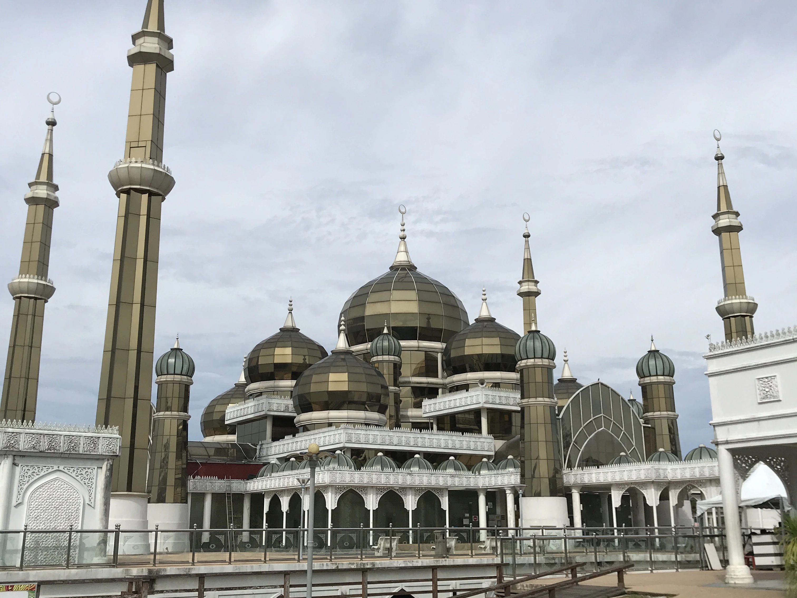
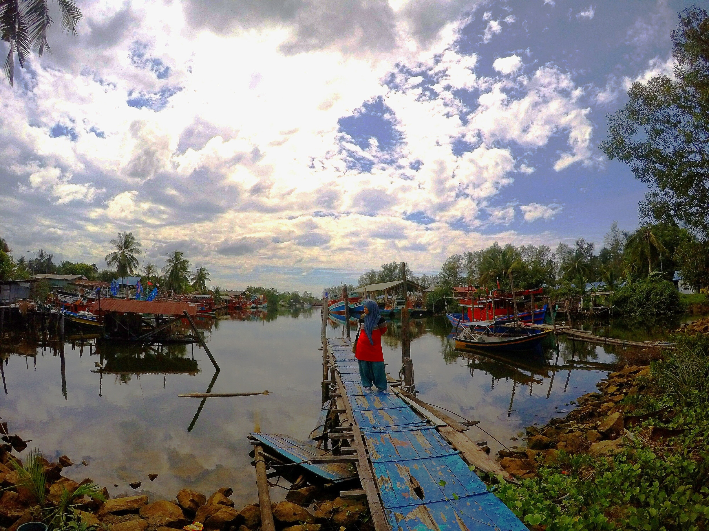

History
Every place must have its own events or origins. The same goes for one of the popular places in the state of Terengganu, namely Kampung Losong. Just mention Kampung Losong, and many residents of this state are familiar with the location of this village.
It only takes 10 minutes from Kuala Terengganu, and indeed, this place is a favorite among tourists to buy 'keropok lekor' there. Keropok lekor is known as a traditional fish snack at Kampung Losong.


Kampung Losong, Terengganu
The name of this village is derived from the name of a renowned keropok maker in the past. The original name of the village was Kampung Lorong Haji Su. However, he has passed away.